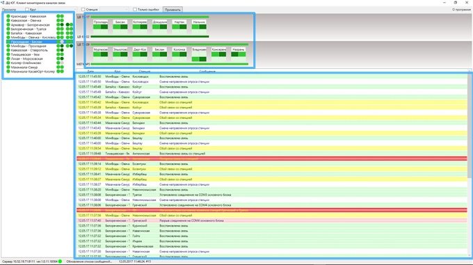

2. Условия производства работ
2.1. Проверка работоспособности модемов, их настройка, проверка наличия ошибок в канале связи с помощью специализированных программ, проверка аппаратных средств, обеспечивающих информационный обмен производится без прекращения функционирования системы.
2.2. Работа производится электротехническим персоналом, имеющим группу по электробезопасности при работе в электроустановках до 1000 В не ниже III, перед началом работ проинструктированным в установленном порядке.
2.3. К работе допускается обслуживающий персонал, прошедший специальную подготовку и выдержавший испытания в знаниях условий эксплуатации системы в соответствии с процедурами, принятыми в ОАО «РЖД».
2.4. Допуск на объект, оформление записей в журналах, контроль качества работ, выполняемых подрядными организациями, участие в приемке выполненных работ осуществляется эксплуатационным персоналом в соответствии с требованиями Инструкции по техническому обслуживанию и ремонту устройств и систем сигнализации, централизации и блокировки, утвержденной распоряжением ОАО «РЖД» от 30 декабря 2015 г. № 3168р.
5. Обеспечение безопасности движения поездов
5.1. Проверка работоспособности модемов, их настройка, проверка наличия ошибок в канале связи с помощью специализированных программ, проверка аппаратных средств, обеспечивающих информационный обмен, производится в технологическое «окно» с согласия поездного диспетчера (далее – ДНЦ).
5.2. Работа выполняется без оформления записи в Журнале осмотра путей, стрелочных переводов, устройств сигнализации, централизации и блокировки, связи и контактной сети формы ДУ-46 (далее – Журнал осмотра).
5.3. При выполнении работы обеспечить безопасность движения в соответствии с требованиями Инструкции по обеспечению безопасности движения поездов при технической эксплуатации устройств и систем СЦБ ЦШ-530-11, утвержденной распоряжением ОАО «РЖД» от 20 сентября 2011 г. № 2055р.
Примечание. Здесь и далее по тексту целесообразно проверить действие ссылочных документов. Если ссылочный документ заменен (изменен), то при пользовании данной картой технологического процесса следует руководствоваться заменяющим (измененным) документом. Если ссылочный документ отменен без замены, то применяется та часть текста, где не затрагивается ссылка на этот документ
7. Технология выполнения работ
Проверка работоспособности модемов, их настройка, проверка наличия ошибок в канале связи с помощью специализированных программ, проверка аппаратных средств, обеспечивающих информационный обмен
7.1. Открыть главное окно программного модуля «Станция связи» (Рисунок 1).
Рисунок 1. Главное окно программного модуля «Станция связи».

Модем станции связи
7.2. Проверить работоспособность модемов станции связи по соответствующим индикаторам панели ПУ в левой верхней части окна (Рисунок 1).
ВНИМАНИЕ: Верхний индикатор соответствует прямому каналу, нижний – обратному (обводному). Зеленый цвет индикатора соответствует нормальной работе модема, красный – отказу модема, желтый (только для аналоговых модемов) – отсутствию соединения со смежной станцией (отсутствие «несущей» в канале).
ВНИМАНИЕ: Если индикатор горит красным цветом, необходимо проверить соединительные кабели, настройки COM-порта, перезапустить программный модуль, при необходимости произвести замену соответствующего модема.
7.3. Провести анализ работы каналов связи с помощью средств мониторинга с помощью запуска исполняемого файла «paRasClt.exe» на АРМ ШН, основное окно запущенного файла приведено на рисунке 2.

Рисунок 2. Основное окно файла «paRasClt.exe»

Выбор диспетчерского участка
Сообщения системы
Состояние связи с отдельными контролируемыми пунктами
ВНИМАНИЕ: Анализ работы каналов связи и связевой аппаратуры производится с помощью программного обеспечения «Модуль мониторинга каналов связи» ДЦ «ЮГ» на базе КП «Круг». Программный модуль мониторинга каналов связи предназначен для оперативного контроля, оценки состояния и анализа работы каналообразующей аппаратуры на всем полигоне дороги.
7.4. С помощью панели выбора диспетчерских участков (Рисунок 2) оценку общую работоспособность связи на контролируемых участках с помощью индикаторов в панели выбора участка (Рисунок 3).
Рисунок 3. Индикаторы в панели выбора участка.
ВНИМАНИЕ: Индикатор слева от названия диспетчерского участка может принимать следующие значения цвета:
Ярко-зеленый - норма;
Оранжевый - наличие проблем на участке;
Блекло-серый - отсутствие данных по участку.
ВНИМАНИЕ: Одна пара индикаторов справа от названия диспетчерского участка соответствует одному кольцу связи участка, первый индикатор - прямой канал, второй – обратный. Индикаторы могут принимать следующие значения цвета:
Красный - ошибка модема центрального поста, работающего по этому каналу;
Желтый - нет соединения модема центрального поста, работающего по этому каналу;
Ярко-зеленый - норма, канал активен (опрос не менее одной станции выполняется по этому каналу);
Темно-зеленый - норма, данные по каналу не передаются менее одного часа (опрос всех станций выполняется по другому каналу);
Блекло-серый - есть соединение в канале, однако данные по каналу не передаются более одного часа. Это состояние фактически соответствует отказу канала. Такое состояние возможно в цифровых каналах, которые не имеют средств контроля разрыва соединения, либо в аналоговых каналах в тех случаях, когда одна сторона из пары точка-точка чувствует разрыв соединения, а другая нет.
7.5. С помощью панели выбора диспетчерских участков (Рисунок 2) выбрать диспетчерский участок и провести оценку работоспособности связи на выбранном участке.
ВНИМАНИЕ: Для детального анализа работы каналов связи конкретного диспетчерского участка в конкретный временной диапазон необходимо выбрать нужный участок в списке, и в меню «Просмотр» выбрать опцию «Диаграмма состояния». Модуль отобразит дополнительное окно с графическим отображением состояния каналов связи за последний час (Рисунок 4).
Окно диаграммы состояния имеет панель управления в верхней строке, с помощью которой выбирается нужный временной диапазон (календарь), осуществляется сдвиг графика влево/вправо на 1 час (кнопки «<<», «>>» ). После выбора произвольной даты необходимо нажать кнопку «Обновить» на панели управления.
Рисунок 4. Окно диаграммы состояния диспетчерского участка.
ПРИМЕЧАНИЕ: Состояние каналов и аппаратуры отдельных станций представлены горизонтальными полосами в рабочей области программы. Рабочее состояние отображается полосой светло-зеленого цвета. Рабочий канал, по которому не передавались данные, отображается полосой темно-зеленого цвета.
Если станция не отвечает на запросы, вся полоса отображается красным цветом. Неработоспособность модемов или отсутствие соединения в аналоговых модемах при работающей станции диагностируются средствами самодиагностики системы и отображаются в виде узкой красной линии над (COM3) или под (COM4) полосой соответствующей станции.
Сторона опроса станции отображается ярко-зеленой полоской над (COM3) или под (COM4) базовой полосы станции, как показано ниже на рисунке, при этом можно отследить смену стороны опроса станции при сбоях.
При переводе контролируемого пункта на резервный микропроцессорный комплект его состояние отображается бирюзовым цветом.
В зависимости от результатов анализа локализуются проблемные участки и принимается решение о выезде представителей разработчика или сервисной организации.
7.6. На выбранном диспетчерском участке с помощью панели выбора состояния связи с отдельными контролируемыми пунктами (далее – КП) (Рисунок 2) проверить работу связи на станциях, входящих в участок (Рисунок 5).
Рисунок 5. Состояние связи на станциях участка.
ВНИМАНИЕ: Графическое отображение станций соответствует их организации в кольцах связи. При наличии двух колец, они отображаются последовательно сверху вниз. Состояние прямого канала отображается над станциями горизонтальной линией справа от названия канала, состояние обратного канала - аналогично снизу под станциями.
ВНИМАНИЕ: Цвет канала в районе отдельных станций может принимать следующие значения:
Ярко-зеленый - норма, канал активен (опрос не менее одной станции выполняется по этому каналу) (на рисунке 5 каналы ЦВ72-17, 72-09, МВТК №5);
Темно-зеленый - норма, данные по каналу не передаются (опрос всех станций выполняется по другому каналу) (на рисунке 5 каналы ЦВ61-02);
Красный - канал не работает (нет соединения с первой станцией канала);
Блекло-серый - станция отключена.
ВНИМАНИЕ: Состояние КП отображается в виде четырех прямоугольников: два верхних - основной комплект, два нижних - резервный комплект. Левый прямоугольник в комплекте соответствует пассивному модему COM3, правый - активному модему COM4.
Цвет прямоугольника может принимать следующие значения:
Ярко-зеленый - норма, канал активен (опрос станции выполняется по данному порту) (на рисунке 5 все станции, кроме станции Владикавказ);
Блекло-зеленый - комплект не активен, работает другой комплект; (на рисунке 5 станция Владикавказ);
Темно-зеленый - норма, данные по данному порту не передаются (опрос станции выполняется по другому каналу (на рисунке 5 все станции первой станции связи опрашиваются по прямому каналу COM3, в то время, как во втором кольце станция Назрань опрашивается по обратному каналу COM4);
Красный - отсутствие отклика модема (соответственно COM3/COM4.);
Желтый - установка соединения (соответственно COM3 COM4);
Блекло-серый - станция отключена.
ВНИМАНИЕ: Пример отображения кольца при наличии ошибки приведен на рисунке 6. На этом рисунке видно, что прямой канал в данное время не работает, на станции Назаровской входящий модем не имеет соединения, все станции работают на основном комплекте оборудования и опрашиваются по обратному каналу.
Рисунок 6. Пример отображения кольца при наличии ошибки.
7.7. Для просмотра параметров КП необходимо навести курсор на нужную станцию, при этом отображается всплывающая подсказка с указанием названия станции, поколения КП, линейного адреса КП, рабочего комплекта, рабочего канала, используемого режима приема передачи (широковещательный или с ретрансляцией данных) (Рисунок 7).
Рисунок 7. Просмотр параметров КП.
7.8. Выполнить проверку оставшихся диспетчерских участков в соответствии с пунктами 7.5-7.7.
7.9. В случае невозможности провести проверку работоспособности модемов, их настройку, проверку наличия ошибок в канале связи с помощью специализированных программ, проверку аппаратных средств, обеспечивающих информационный обмен передать информацию диспетчеру центра диагностики и мониторинга для организации оповещения разработчика системы (центра сервисного обслуживания) для принятия мер.
ПРИМЕЧАНИЕ: Аналоговые модемы работают как по каналам тональной частоты, так и медным выделенным физическим линиям связи. Максимальный уровень передачи сигнала у данных модемов составляет 0 дБ, а минимальный уровень приема –43дБ, таким образом чувствительность приемника (рабочий диапазон) составляет 43 дБ. Если затухание сигнала в кабеле МКБАБп 14x4x1,2 ориентировочно равно 0,9-1,1 дБ/км, то максимальная дальность связи будет составлять около 38-40 км при скорости 33,6 кБит/с с учетом протокола V34+. По умолчанию выходной сигнал модемов выставлен на уровне –1,5 Нп (-13дБ). При таком уровне выходного сигнала модемы нормально работают на различных типов каналов связи. Однако, необходимо иметь в виду, что при работе по физическим линиям уровень выходного сигнала должен быть максимальным. А в случае использования каналов тональной частоты, выходной сигнал должен быть минимальным, чтобы не перегружать модуляторы в используемых дифференциальных системах. Для этого перед входными цепями модулятора можно вводить дополнительные сопротивления для нужного затухания сигнала.
8. Заключительные мероприятия, оформление результатов работы
После окончания проверки работоспособности модемов, их настройки, проверки наличия ошибок в канале связи с помощью специализированных программ, проверки аппаратных средств, обеспечивающих информационный обмен оповестить ДНЦ об окончании работы, сделать запись в журнале ШУ-2 о проведенной работе и внести результаты выполнения работы в систему ЕК АСУИ в соответствии с требованиями, изложенными в разделе 4 «Порядка планирования, учета и контроля выполнения работ в хозяйстве автоматики и телемеханики», утверждённого распоряжением ОАО «РЖД» от 13 января 2020 г. №20/р.
Результаты работы специализированная организация оформляет в журнале учета выполненных работ по техническому обслуживанию и ремонту устройств и систем ЖАТ по форме, представленной в регламенте взаимодействия между участниками процесса технического обслуживания и ремонта систем и устройств железнодорожной автоматики и телемеханики ОАО «РЖД», осуществляемых специализированными организациями, утвержденном распоряжением ОАО «РЖД» от 30 декабря 2017 г. № 2827р.
Начальник отдела ПКБ И
Конструктор 1 категории ПКБ И
Е.Н. Иванов
В.В. Харламов